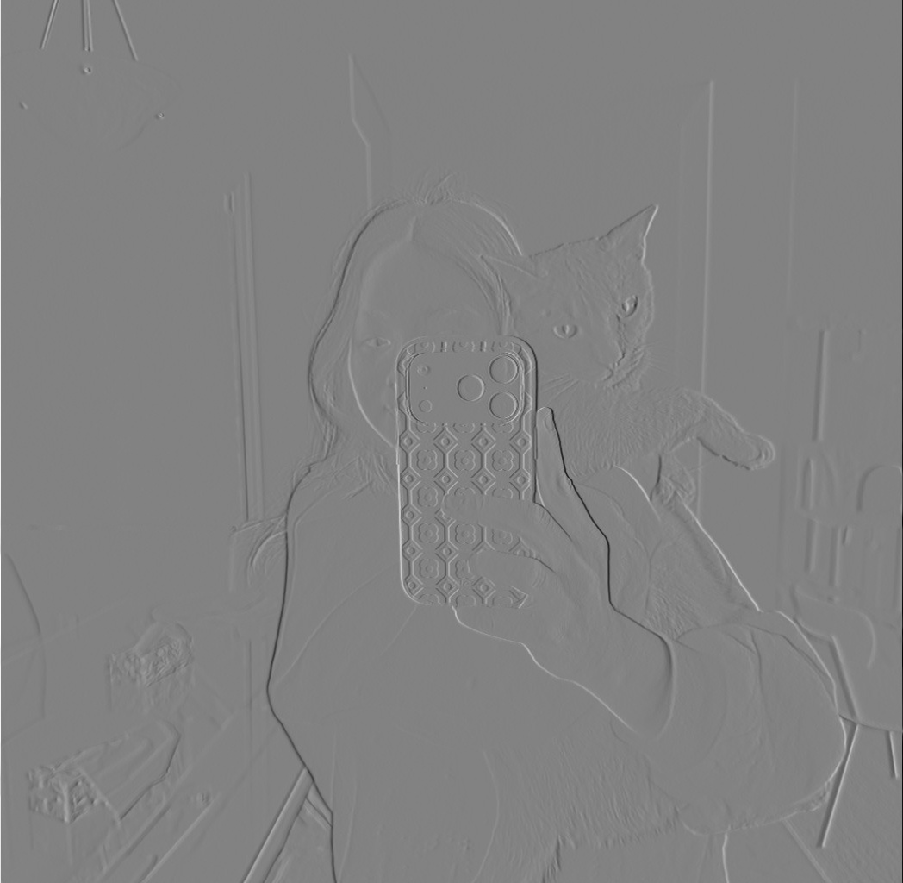
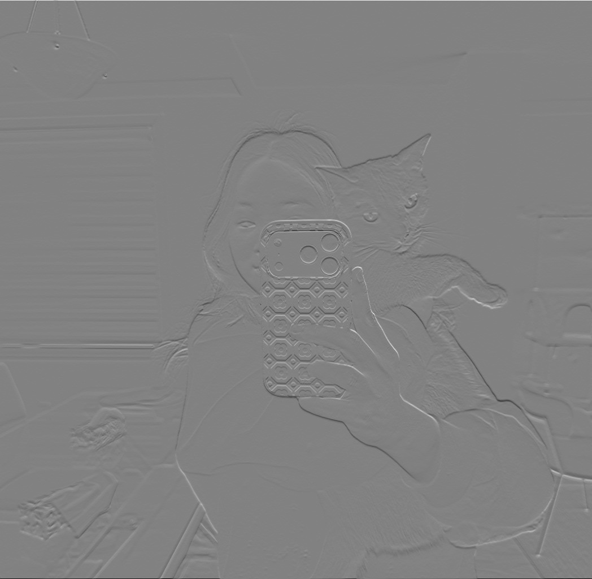
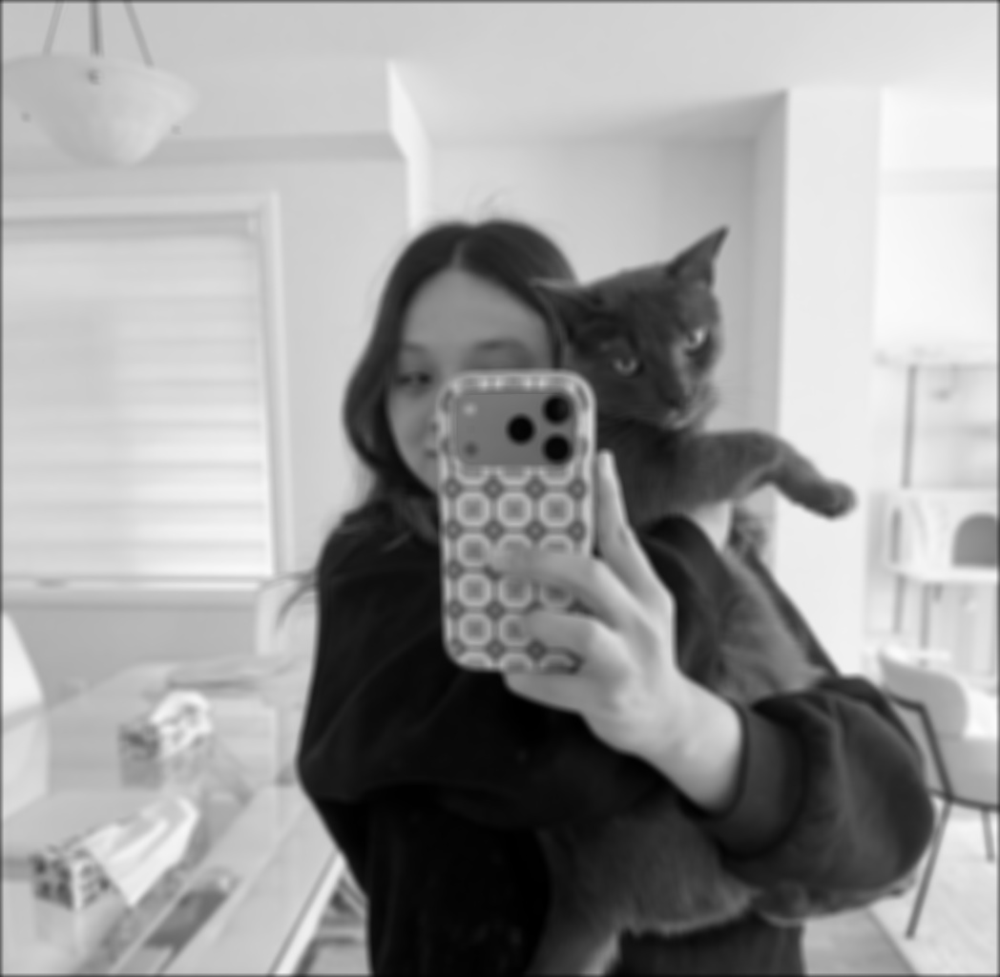

Return to Assignment 2 Overview
This was the original camera man image:
I read the cameraman image in grayscale with cv2.imread(image, cv2.IMREAD_GRAYSCALE) and convolved it with the finite difference operators dx = np.array([[1,0,-1]]) and dy = dx.reshape(-1,1) using signal.convolve(grayscale_image, dx, mode='same'). For the gradient magnitude, I combined the two partial derivatives with grad = np.sqrt(dx_output_image**2 + dy_output_image**2), which shows how strong the edge is at each pixel.


To binarize the gradient magnitude, I went through every pixel and set it to 255 if grad[i][j] >= threshold and 0 otherwise. I experimented by trying different thresholds of 5, 20, 35, 50, 65 and 80 to see which was best.


I found that the lower thresholds of 5, 20, and 35 had a lot of noise (specks in the images), so I moved to higher thresholds:


The higher the threshold I set, I found that the images were starting to lose their edges, for example, the edges of the coat were becoming less and less visible. I think that the best representation for the binarized gradient magnitude is the threshold of 50 since it's the lowest value where the noise is almost gone while the main edges (cameraman, tripod) are still strong/visible. The tradeoff here is that with the threshold set to 50, you lose the buildings in the background since their edges are weak.
I implemented 2D convolutions using 4 for loops and 2 for loops and 3 different filters: Dx, Dy, and a 9x9 box filter.
This is my original image:

Here is a breakdown of the steps I took to be able to perform the convolutions:
I padded the image with zeros (black) so the output would come out the same size as the input. The padding on each side is half the filter size, topbot_pad = int(((filter.shape[0]-1)/2)) and leftright_pad = int(((filter.shape[1]-1)/2)), and I applied it with np.pad(array=image, pad_width=padding_size, mode="constant", constant_values=0).
Convolution applies the filter flipped, so I used np.flip(filter) to flip it.
The outer two loops go over every pixel of the original image, and the inner two loops go over every entry of the flipped filter. Each output pixel is a running sum, sum += flipped[k][l] * padded_image[i+k][j+l], which I then save with output_image[i][j] = sum.
I kept the two outer loops, but replaced the inner two loops from the 4 for loop version. For each pixel I take the section of the padded image that the filter covers, group = padded_image[i:i+flipped.shape[0], j:j+flipped.shape[1]], and then multiply it by the flipped filter and add everything up with np.sum(group * flipped).
I read my photo in grayscale with cv2.imread(image, cv2.IMREAD_GRAYSCALE) and made the three filters dx = np.array([[1,0,-1]]), dy = dx.reshape(-1,1), and the box filter nine = np.ones((9,9)) / 81.0. Dx and Dy produce negative values, so before saving those outputs I rescaled them to 0–255 by shifting with image - image.min() and scaling with 255 * image / image.max(). The box filter blurs the image, Dx picks up vertical edges, and Dy picks up horizontal edges.
In order to compare accurately, I made sure to treat boundaries the same for the two-loop, four-loop, and scipy versions. I padded all of them with zeros (black) and made sure the outputs were all the same size by using these scipy parameters: boundary="fill", fillvalue=0, and mode="same". I ran the same filters through signal.convolve2d(grayscale_image, dx, mode="same", boundary="fill", fillvalue=0) and checked each result against mine with np.allclose(output_image_2_dx, scipy_dx). All three filters returned True for both of my versions, meaning the outputs were the same. Padding the images with zeros resulted in dark borders around the box-filtered images and bright lines along the borders of the Dx and Dy outputs.
Here are my output images using 4 for loop version:


Here are my output images using 2 for loop version:



Here are my output images using scipy:



I timed each method with time.perf_counter(). Here are the run times:
| Filter | 4 For Loops | 2 For Loops | Scipy |
|---|---|---|---|
| Dx | 2.924 seconds | 6.140 seconds | 0.037 seconds |
| Dy | 3.709 seconds | 8.764 seconds | 0.034 seconds |
| 9x9 Box Filter | 58.286 seconds | 8.389 seconds | 0.244 seconds |
The runtime was fastest for the SciPy versions because the function runs in compiled C, whereas the four-loop and two-loop versions run in interpreted Python (adds overhead on every step). The 4 for loop version was the slowest by far with the 9×9 box filter, since a bigger filter means more multiplications per pixel, each done one at a time in Python. The 2 for loop version took about the same time regardless of the filter, because its runtime mostly comes from calling NumPy once per pixel, not from the filter size. This is also why the 4 for loop version was faster than the 2 for loop version for the small Dx and Dy filters.